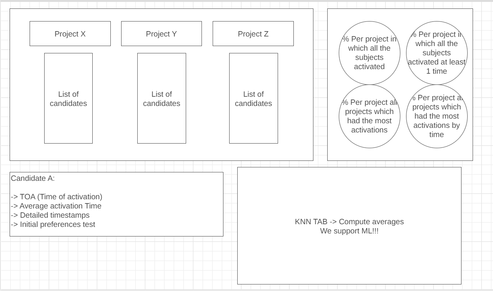
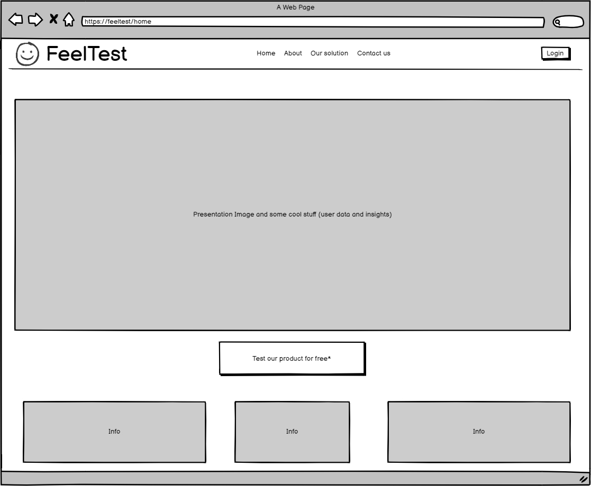
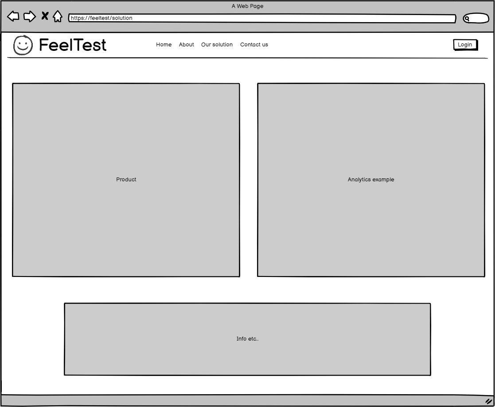
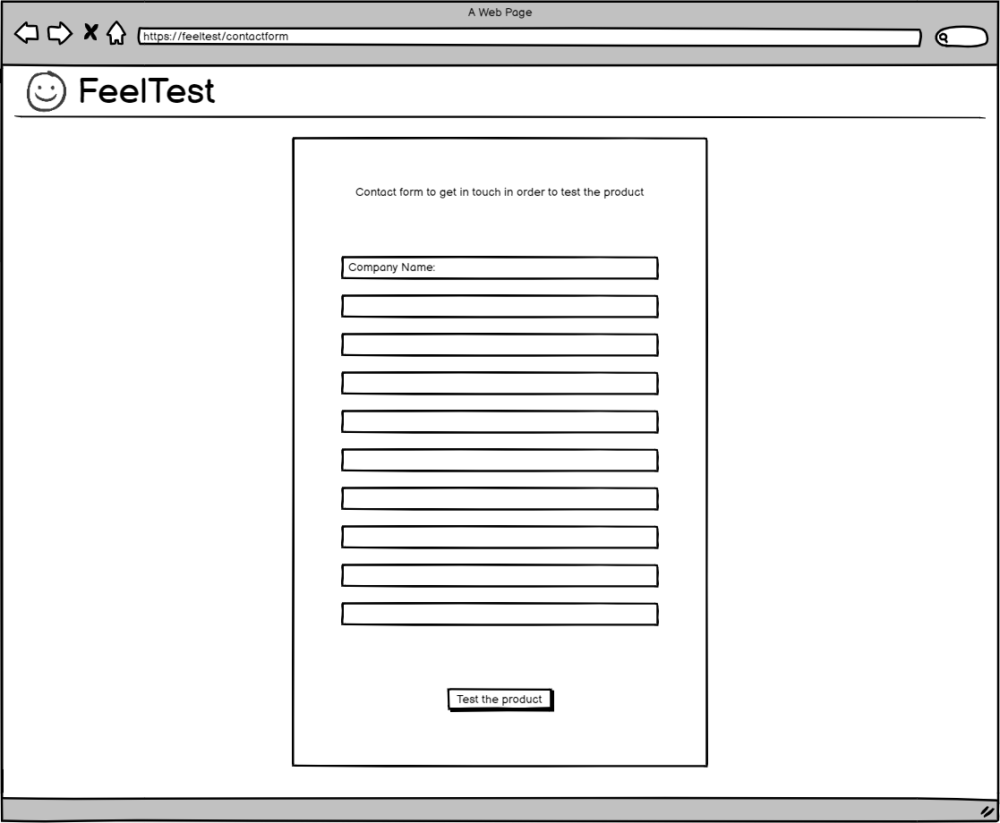
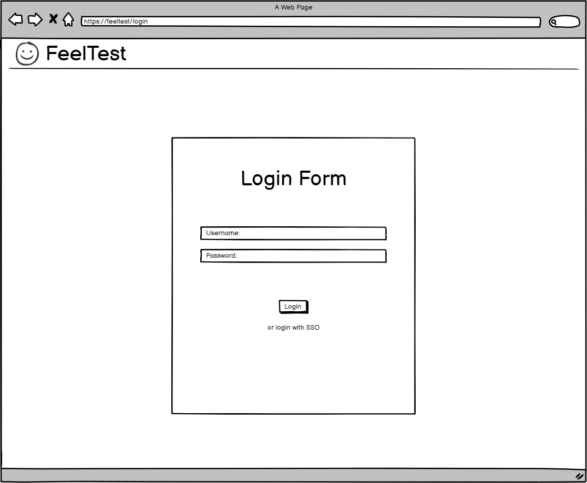
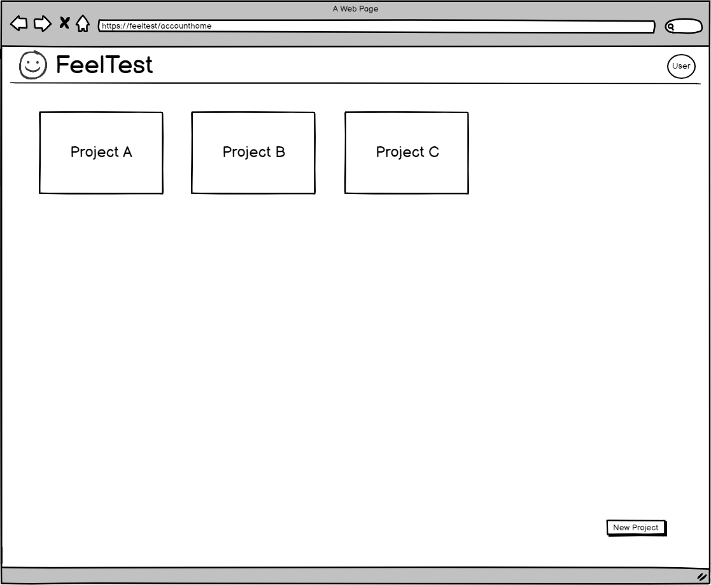
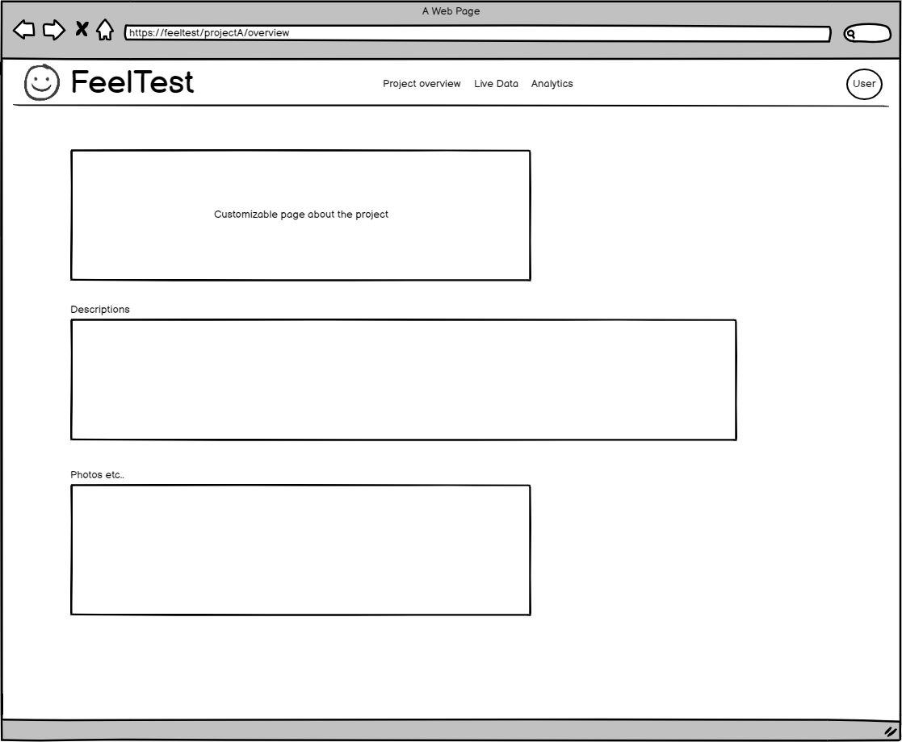
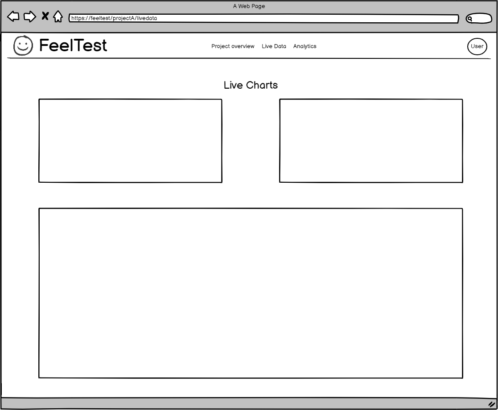
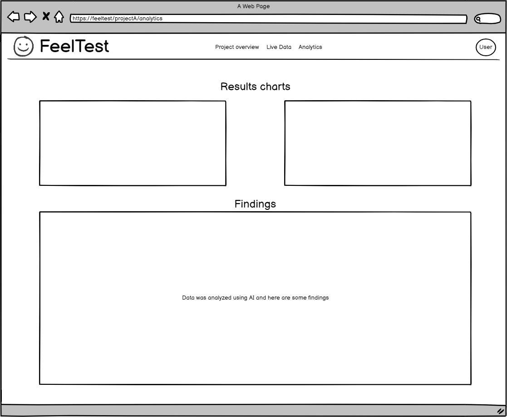

Gheorghe Dragoș (irinel.gheorghe@stud.etti.upb.ro)
Stoian Cezar (cezarstoian1@gmail.com)
Product Owner (PO): Dragos
Project Manager (PM): Cezar
Frontend (FE): Dragos
Backend (BE): Cezar
Initial view
-> Problem almost hit us more than we tried to hit it. We were fortunate enough to invest the R&D before the official launch
-> As a solution for this problem and what we are trying to implemnet is a automate monitor for all the corporate shenanigans focused on you guessed what, focus groups
-> To discover our customers we plan to make an add for advertisment companies.
Detailed discovery process should go as following: - Ask around -> We shall ping each and every one of our start-up partners which are in the process of testing a new product and want a first impression from a focus group -> We will provide a demo focus group for the add/app/product with detailed areas/minute/buttons that the user can click on and give feedback
-> Our product was briefly tested in the past with the posibility of bigger investments. For the moment, we will focus on the software implementation and pinpoint the future hardware requests. As for the moment, hardware implementaion will only be a blackbox that will be rented to the customer for a period of time. The blackbox will be able to record the focus group and send the data to our cloud server for further analysis
-> We are not in the process of selling our product. Further R&D should be invested to deliver a suitable experience from a frontend perspective
Our journey began when we noticed a significant inefficiency in traditional focus group testing methods used for marketing purposes. These methods were not only resource-intensive, relying heavily on paper, but also suffered from limitations in providing real-time feedback and insights. We recognized that there was a clear need for a more efficient and data-driven approach to help companies understand consumer reactions to their products.
We envisioned a solution in the form of a wearable device that individuals could attach to themselves. This device would capture and transmit real-time stimuli information based on the content they were engaging with (e.g., products, services, ads). This data would be sent to our database, where it could be analyzed to provide valuable insights into what parts of the content kept the person focused and interested. The aim was to enable companies to create better products and marketing campaigns by harnessing this real-time behavioral data.
Our plan for customer discovery involved a multi-faceted approach to understand the market, identify potential customer segments, and gather insights. We initially aimed to identify and engage with marketing and advertising professionals, market researchers, and product development teams as our primary customer segments. Our approach consisted of the following steps:
- We conducted in-depth market research to identify potential customer segments interested in improving their marketing strategies. We focused on those segments who regularly conducted focus group testing or market research to gain insights into consumer behavior. These segments include marketing and advertising professionals, market researchers, and product development teams. By pinpointing these groups, we can tailor your approach to their specific needs and pain points. - To reach potential customers, we leveraged a combination of online and offline channels. We contacted some marketing experts via social platforms, such as LinkedIn. Additionally, we will attend industry conferences and networking events to connect with professionals in marketing and market research. - We used/will use a multi-pronged approach to collect information. This included conducting face-to-face or online interviews with professionals distributing. Also, we will create an online questionnaires. Our questions revolved around the pain points they experienced in traditional focus group testing, their interest in real-time behavioral data, and the potential benefits they saw in our solution. - The insights we gathered were invaluable. We learned that professionals in marketing and market research were indeed facing challenges with traditional focus group testing, particularly in terms of cost, time, and the delay in feedback. They showed a keen interest in real-time data containing the tester's emotions and believed it could significantly enhance their decision-making processes. This feedback played a crucial role in shaping our product features and marketing strategies.
- Tell me about the last time you conducted a focus group or market research study. What was the process like?
This question helps in understanding their current practices and experiences.
Do we consider that we are ready to move to the next steps (Customer Validation)?
The answer is: Not yet! While we've made some significant progress in reaching out to potential customers in our target segment, we still need a bit more time to solidify our readiness for the Customer Validation stage. One of the challenges we've encountered is that it's taking a little longer than expected to get in touch with the people from this segment. We want to ensure that we engage with a sufficient number of potential customers and gather their feedback comprehensively before proceeding to the next steps. We're actively working on expanding our outreach and conducting more in-depth conversations with professionals in the marketing and advertising industry. We believe that by taking a few more days to connect with potential customers and gather their insights, we will be better prepared to validate our solution and ensure it aligns closely with the needs of our target audience.Disclaimer: The wireframe can change in the future. This is just a preview, not the final form.
This is the landing page
This is a presentation page for our product/service. Here it is presented the device that we will use, and the data analysis process
This is a form that helps potential buyer to get in touch with us, in order to test the product
*The product will be free to test
This is a form to connect to the account. The account will be activated after the contract is signed
This the first page that the user sees after login. In this page, the user can see his projects/tests and can create more of them
In this page, the user can see datails about his project etc. This page can be personalized by the user
In this page, the user can see live data being transmitted with the help of our device
In this page, the data is analyzed with the help of AI. The data is presented to the user and suggestions are shown
We'd love to hear from you